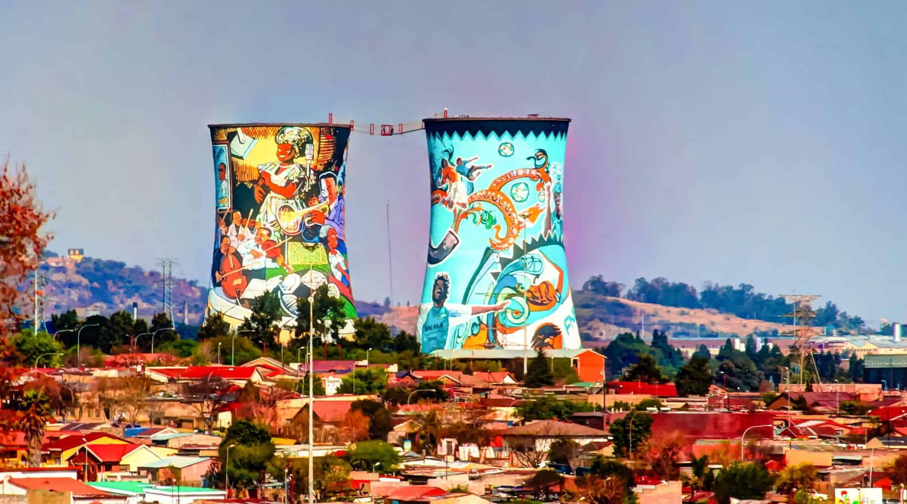
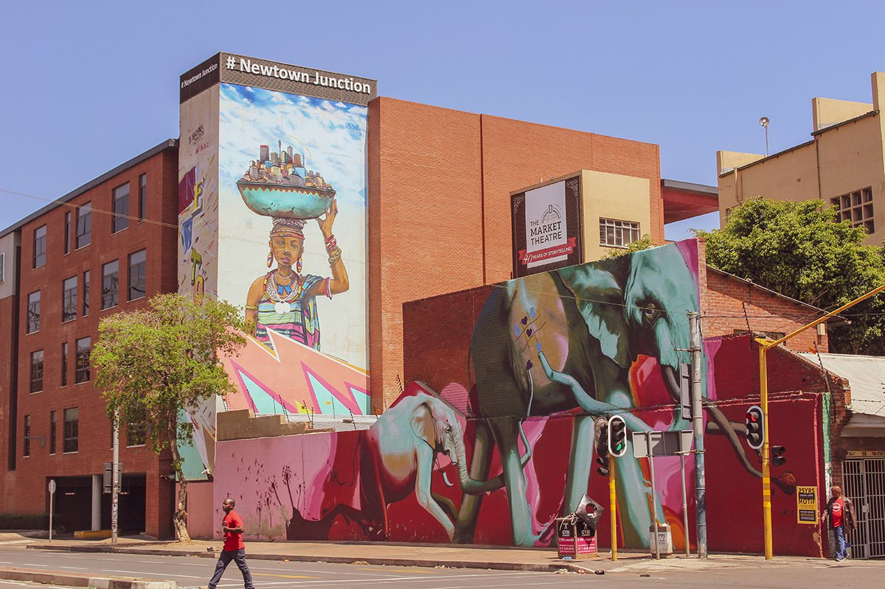
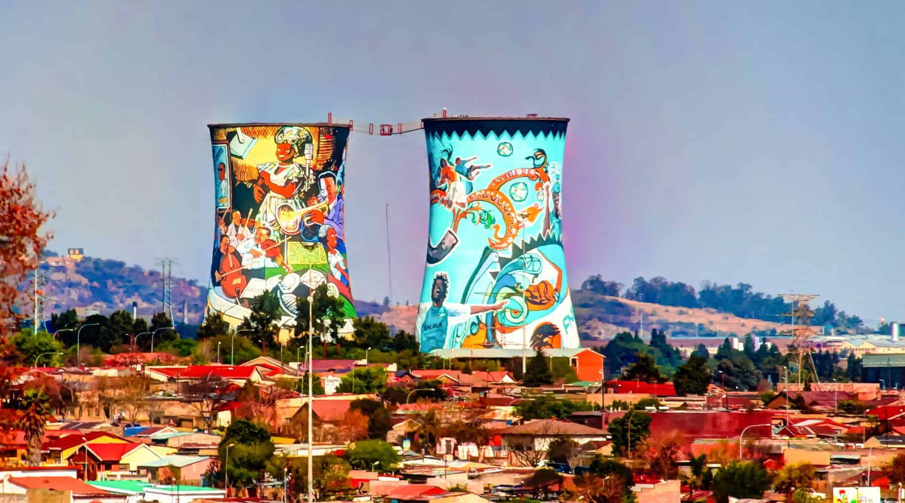
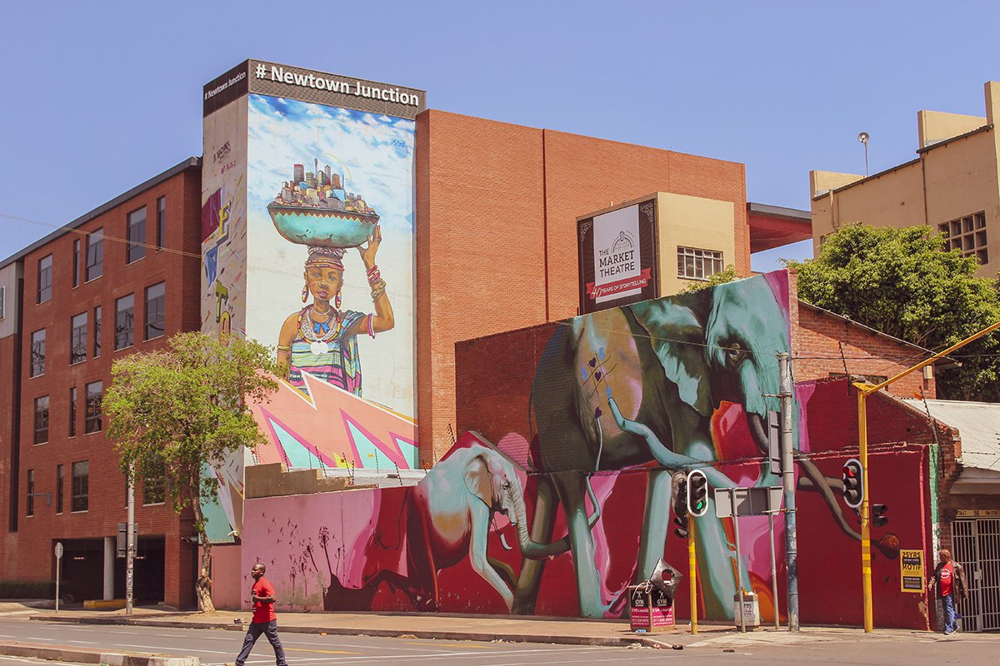

My Trash Content
!!! Disclaimer: I have just moved to this beautiful city, although I am trying to adjust to it.
WATCH THIS SPACE!
Soon, I will be uploading more of my adventures here and my blog will be up and running very soon!
There will be more content where I actually explore Jhb and take some really cool pictures!
My drawings:
Here is an INSANE digital sketch of Kaneki from Tokyo Ghoul. I traced something, although it was my first
attempt at a digital artwork.

Let me share something else. How about a cool guy in mask?
Inspiration from my favourite band, "BRING ME THE HORIZON"!

A bit of a different art style, but a really trippy technique that I have learned
through digital drawings. A Nebula, perhaps..?

Here are some cool pictures that I took while exploring this city.
 



How About Some Cute Cat Posts? Have Some Free Serotonin.